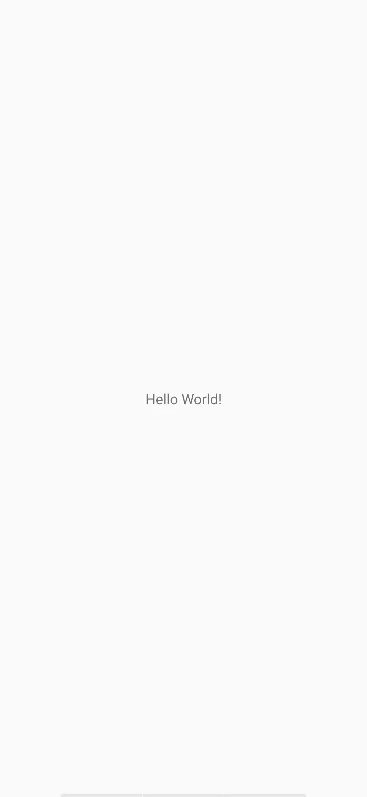

一.WindowManager介绍
Android为我们提供的用于与窗口管理器进行交互的一个API！我们都知道App的界面都是 由一个个的Acitivty组成，而Activity又由View组成，当我们想显示一个界面的时候， 第一时间想起的是:Activity，对吧？又或者是Dialog和Toast。
但是有些情况下，前面这三者可能满足不了我们的需求，比如我们仅仅是一个简单的显示 用Activity显得有点多余了，而Dialog又需要Context对象，Toast又不可以点击… 对于以上的情况我们可以利用WindowManager这个东东添加View到屏幕上， 或者从屏幕上移除View！他就是管理Android窗口机制的一个接口，显示View的最底层！
二.如何获得WindowManager实例
- 获得WindowManager对象:
1
WindowManager wManager = getApplicationContext().getSystemService(Context. WINDOW_ SERVICE);
- 获得WindowManager.LayoutParams对象，为后续操作做准备
1
WindowManager.LayoutParams wmParams=new WindowManager.LayoutParams();
三.WindowManager使用实例：
实例1：获取屏幕宽高
在Android 4.2前我们可以用下述方法获得屏幕宽高：1
2
3
4
5
6
7
8
9public static int[] getScreenHW(Context context) {
WindowManager manager = (WindowManager)context
.getSystemService(Context.WINDOW_SERVICE);
Display display = manager.getDefaultDisplay();
int width = display.getWidth();
int height = display.getHeight();
int[] HW = new int[] { width, height };
return HW;
}而上述的方法在Android 4.2以后就过时了，我们可以用另一种方法获得屏幕宽高：
1
2
3
4
5
6
7
8
9
10public static int[] getScreenHW2(Context context) {
WindowManager manager = (WindowManager) context.
getSystemService(Context.WINDOW_SERVICE);
DisplayMetrics dm = new DisplayMetrics();
manager.getDefaultDisplay().getMetrics(dm);
int width = dm.widthPixels;
int height = dm.heightPixels;
int[] HW = new int[] { width, height };
return HW;
}然后我们可以再另外写两个获取宽以及高的方法，这里以第二种获得屏幕宽高为例：
1
2
3
4
5
6
7public static int getScreenW(Context context) {
return getScreenHW2(context)[0];
}
public static int getScreenH(Context context) {
return getScreenHW2(context)[1];
}当然，假如你不另外写一个工具类的话，你可以直接直接获取，比如：
1
2
3
4
5
6
7
8
9
10
11
12public class MainActivity extends AppCompatActivity {
@Override
protected void onCreate(Bundle savedInstanceState) {
super.onCreate(savedInstanceState);
setContentView(R.layout.activity_main);
WindowManager wManager = (WindowManager) getSystemService(Context.WINDOW_SERVICE);
DisplayMetrics dm = new DisplayMetrics();
wManager.getDefaultDisplay().getMetrics(dm);
Toast.makeText(MainActivity.this, "当前手机的屏幕宽高：" + dm.widthPixels + "*" +
dm.heightPixels, Toast.LENGTH_SHORT).show();
}
}运行结果：

实例2：设置窗口全屏显示
1
2
3getWindow().setFlags(WindowManager.LayoutParams.FLAG_FULLSCREEN,
WindowManager.LayoutParams.FLAG_FULLSCREEN);
getSupportActionBar().hide();运行结果：
实例3：保持屏幕常亮
1
2
3
4
5
6
7
8
9public void setKeepScreenOn(Activity activity,boolean keepScreenOn)
{
if(keepScreenOn)
{
activity.getWindow().addFlags(WindowManager.LayoutParams.FLAG_KEEP_SCREEN_ON);
}else{
activity.getWindow().clearFlags(WindowManager.LayoutParams.FLAG_KEEP_SCREEN_ON);
}
}实例4：简单悬浮框的实现
实现代码：
首先我们需要一个后台的Service在后台等待我们的操作，比如完成悬浮框的绘制移除等， 于是乎我们定义一个Service：MyService.java： 我们需要一个创建悬浮框View的一个方法：1
2
3
4
5
6
7
8
9
10
11
12
13
14
15
16
17
18
19
20
21
22
23
24
25
26
27
28
29
30
31
32
33
34
35
36
37
38
39
40
41
42
43
44
45
46
47
48
49
50private void createWindowView() {
btnView = new Button(getApplicationContext());
btnView.setBackgroundResource(R.mipmap.ic_launcher);
windowManager = (WindowManager) getApplicationContext()
.getSystemService(Context.WINDOW_SERVICE);
params = new WindowManager.LayoutParams();
// 设置Window Type
params.type = WindowManager.LayoutParams.TYPE_SYSTEM_ALERT;
// 设置悬浮框不可触摸
params.flags = WindowManager.LayoutParams.FLAG_NOT_TOUCH_MODAL
| WindowManager.LayoutParams.FLAG_NOT_FOCUSABLE;
// 悬浮窗不可触摸，不接受任何事件,同时不影响后面的事件响应
params.format = PixelFormat.RGBA_8888;
// 设置悬浮框的宽高
params.width = 200;
params.height = 200;
params.gravity = Gravity.LEFT;
params.x = 200;
params.y = 000;
// 设置悬浮框的Touch监听
btnView.setOnTouchListener(new View.OnTouchListener() {
//保存悬浮框最后位置的变量
int lastX, lastY;
int paramX, paramY;
@Override
public boolean onTouch(View v, MotionEvent event) {
switch (event.getAction()) {
case MotionEvent.ACTION_DOWN:
lastX = (int) event.getRawX();
lastY = (int) event.getRawY();
paramX = params.x;
paramY = params.y;
break;
case MotionEvent.ACTION_MOVE:
int dx = (int) event.getRawX() - lastX;
int dy = (int) event.getRawY() - lastY;
params.x = paramX + dx;
params.y = paramY + dy;
// 更新悬浮窗位置
windowManager.updateViewLayout(btnView, params);
break;
}
return true;
}
});
windowManager.addView(btnView, params);
isAdded = true;
}然后我们只需在OnCreate( )方法中调用上述的createWindowView( )方法即可启动加载悬浮框， 但是我们发现了一点：这玩意貌似关不掉啊，卧槽，好吧，接下来我们就要分析下需求了!
当处于手机的普通界面，即桌面的时候，这玩意才显示，而当我们启动其他App时，这个悬浮框应该 消失不见,当我们推出app又回到桌面,这个悬浮框又要重新出现!
那么我们首先需要判断App是否位于桌面，于是乎我们再加上下述代码：
1 | /** |
好了,接下来我们需要每隔一段时间来进行一系列的判断，比如：是否在桌面，是否已加载悬浮框， 否则加载；否则，如果加载了,就将这个悬浮框移除!这里我们使用handler~,因为不能在子线程直接 更新UI，所以，你懂的，所以我们自己写一个handler来完成上述的操作:
1 | //定义一个更新界面的Handler |
最后要做的一件事,就是重写Service的onStartCommand( )方法了,就是做判断,取出Intent中的 数据,判断是需要添加悬浮框,还是要移除悬浮框!
1 | @Override |
好的，至此，主要的工作就完成了，接下来就是一些零碎的东西了，用一个Activity 来启动这个Service：MainActivity.java：
1 | public class MainActivity extends AppCompatActivity implements View.OnClickListener { |
接着AndroidManifest.xml加上权限，以及为MainService进行注册：1
2
3
4<uses-permission android:name="android.permission.SYSTEM_ALERT_WINDOW" />
<uses-permission android:name="android.permission.GET_TASKS" />
...
<service android:name=".MainService"/>
好了，逻辑还是比较容易理解的~大家自己再看看吧~
运行效果图：


...
...
听首歌放松一下！